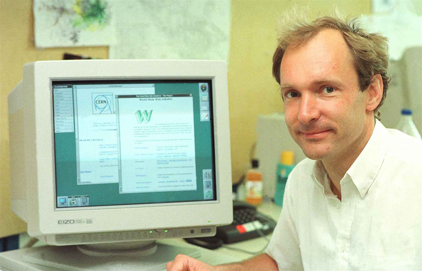
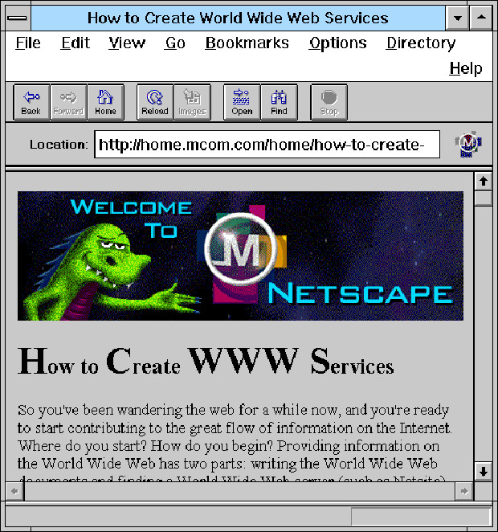

NAVEGADORES
Durante o contexto da guerra fria, os interesses americanos geram o primeiro projeto bem-sucedido de rede, em 1969 conhecido
por ARPANET.
Em 1990 com o sistema web muito mais desenvolvido, possibilitou ao britânico Tim Berners-Lee criar o primeiro servidor web,
enquanto ele trabalhava na Suíça, na CERN, o cientista batizou essa nova janela para a internet como "WorldWideWeb". Isso
tudo sendo hospedado por um NeXTcube que possui somente 8 MB de ram.


Um ano depois, Berners-Lee pediu ao estudante de matemática do CERN Nicola Pellow que escrevesse o Navegador em Modo de Linha, um programa para terminais básicos de computadores.
Em 1993, a web explodiu em universidades, governos e empresas privadas, naquele ano, o Mosaic foi criado no Centro Nacional de Aplicações de Supercomputação (NCSA), na Universidade de Illinois em Urbana-Champaign, pelo cientista de computação Marc Andreessen. Foi o primeiro navegador web popular e o ancestral inicial do Mozilla Firefox.
No ano seguinte (1994), Andreessen fundou a Netscape e lançou ao público o navegador Netscape. Foi um grande sucesso e o primeiro navegador para o povo.
Atualmente uma variedade de navegadores tomam conta do mercado, porém dentro das muitas possibilidades muitas pessoas podem acabar ficando perdidas.
Atualmente o mercado foi monopolizado pela Google e sua ferramenta Chrome lançada em 2008, onde destacou se dentro do mercado graças ao designer que atraiu diversos usuários e a
integração do navegador com diversas ferramentas do Google. Porém aqui vale ressaltar, que mesmo sendo a ferramenta mais utilizada, esse mérito faz ela seja o alvo favorito
que pessoas que buscam brechas dentro do robusto sistema da google. Para os mais paranoicos da área da tecnologia, existem inúmeros alternativas, desde navegadores que se destacam ao ser mais leves, ou até com recursos de segurança adicionais
Vale citar como exemplo desse último o Tor Browser, uma iniciativa de código aberto, financiada pelo governo dos EUA através da DARPA, com o foco que o usuário seja muito mais
anônimo, e que o sistema ajuda a combater a censura na internet.
Uma alternativa também é o novo produto da Microsoft, o Edge, que lançado juntamente com o Windows 10, é uma ferramenta que foi feita para ser muito mais otimizada no
sistema operacional.
No mercado, temos também o Opera GX vindo para ajudar os gamers possibilitando colocar limites, personalização e vpn próprio, além de
outras funcionalidades da ferramenta.